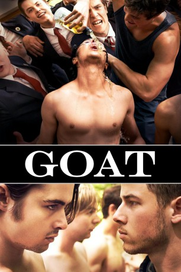

#8363 Goat
 
 IMDB-Wertung: 5.7 / 10
IMDB-Wertung: 5.7 / 10  Tomatometer: 79
Tomatometer: 79  Metascore: 0
Metascore: 0 
Brad ist 19 und hat erst vor kurzem einen Angriff auf sein Leben erlebt. Daher füllt er sich alleine nicht mehr sicher und folgt somit seinem Bruder an die Universität, um sich in einer Verbindung mit wahren Brüdern zu umgeben. Doch bevor man in eine Verbindung aufgenommen wird, muss man erst durch die Hölle gehen...
Jahr: 2016
Dauer: 101 Minuten
FSK:
Land: USA Studio: The Film ArcadeTonspuren:
Untertitel:
Auflösung: 720p (1280x720) Größe: 2949 MB
Genre: Drama
Regisseur: Andrew Neel
Drehbuch: David Gordon Green
Soundtrack: Arjan Miranda
Darsteller:
 Ben Schnetzer als Brad
Ben Schnetzer als Brad- Nick Jonas als Brett
- Gus Halper als Chance
 Danny Flaherty als Will
Danny Flaherty als Will Virginia Gardner als Leah
Virginia Gardner als Leah Jake Picking als Dixon
Jake Picking als Dixon- Will Pullen als The Smile
 Austin Lyon als Dave
Austin Lyon als Dave- Eric Staves als Baity
 James Franco als Mitch
James Franco als Mitch Kevin Crowley als Detective Burke
Kevin Crowley als Detective Burke- Jon Osbeck als Provost
 Denise Dal Vera als Mom
Denise Dal Vera als Mom Pepper Sweeney als Dad
Pepper Sweeney als Dad Gary Chinn als Funeral Mourner (uncredited)
Gary Chinn als Funeral Mourner (uncredited)- Chase Crawford als Goat Boy (uncredited)
 William Cross als Funeral Mourner (uncredited)
William Cross als Funeral Mourner (uncredited) Michelle Dobrozsi als Provost's Secretary (uncredited)
Michelle Dobrozsi als Provost's Secretary (uncredited)- Jerry Gallagher als Funeral Mourner (uncredited)
- Carli Hudson als Carly from Out of Town (uncredited)
- Misty M. Jump als Funeral Mourner (uncredited)
- Angel Kerns als Student (uncredited)
- Christina Lambert als Coffee Shop Patron / Funeral Mourner (uncredited)
- Matthew Legner als Police lineup (uncredited)
- Kenneth Meyer als Student (uncredited)
- Jenny Marie Mitchell als Sara (uncredited)
- Patrick Murney als Jason (uncredited)
- Alex Rogers als Fraternity Brother (uncredited)
- Trent Rowland als Fraternity Brother (uncredited)
- Brock Yurich als Wes
- Jamar Jackson als The Breath
- Lauren Knutson als Michelle
- Clare Combest als Katie
- Nick Rose als District Attorney
- Annie Grove als Jogging Girl
- Caleb Farley als Pledge
- Daniel Grey als Pledge
- Cody Roberts als Pledge
- Trever Turner als Pledge
- Chewie als The Goat
- Brennan Horine als Pledge
- Tyler Beaty als Fraternity Brother (uncredited)
- Lance Brock als Funeral Mourner (uncredited)
- Kyle Dickinson als Student (uncredited)
- Matt Dreyer als Lake House Party Goer (uncredited)
- Philip Krinsky als Dish Washer (uncredited)
- Nick Mitchell als Fraternity Brother (uncredited)
- David Pittinger als Police Officer (uncredited)
- Natasha Renee als Student (uncredited)
- Sarah Ritter als Sorority Girl (uncredited)
Datei: X:\2016(G-M)\Goat (2016, FSK, 1280x720).mkv seit 28.02.2018
Festplatte: HD 2016(A-Z)
 Es gibt insgesamt 164 Filme in der Gruppe '2016(G-M)'
Es gibt insgesamt 164 Filme in der Gruppe '2016(G-M)'